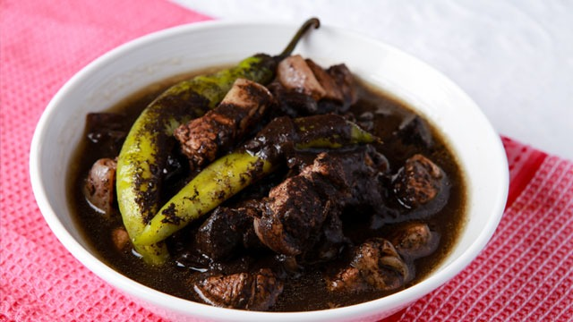

Recipe for Dinuguan

Instructions
In a bowl, combine pig's blood and about 2 tablespoons of the vinegar.
Stir well.
In a pot over medium heat, heat oil. Add onions, garlic,
and ginger and cook until softened.
Add pork and cook, stirring occasionally, until lightly browned.
Add fish sauce and cook for about 1 to 2 minutes.
Add vinegar and bring to a boil. Cook, uncovered and without stirring,
for about 3 to 5 minutes or until slightly reduced.
Add water and bring to a boil. Lower heat, cover,
and continue to cook for about 15 to 20 minutes or until meat is tender.
Add pork blood, stirring to disperse and prevent lumps.
Add brown sugar and stir to dissolve.
Add chili peppers.
Continue to simmer for about 10 minutes or until sauce is thickened.
Season with salt and pepper to taste. Serve hot with rice or puto.
Ingredients
• Pork Blood
• Vinegar
• Onion
• Pork Belly
• Brown Sugar
• Chilies
• Salt and Pepper
• Oil